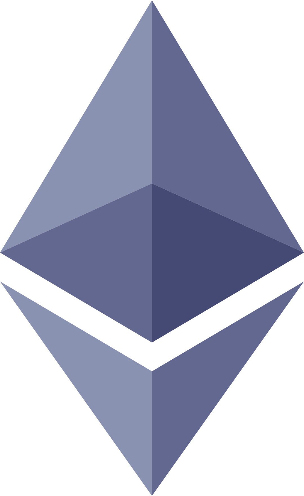
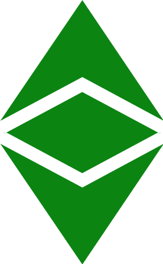
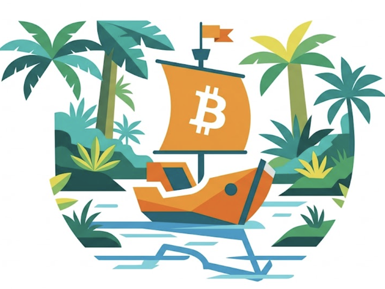

Historia de los Forks
La historia nunca se repite, pero a veces rima.
Cuatro capítulos
¿Quién decide la ley?
¿Cómo escala Bitcoin?
¿Quién controla la cadena?
¿Qué es aceptable en los bloques?
Escanea para leer la serie
dave-rodt.github.io/fork-history¿Qué es un fork?
Un mismo pasado. Dos futuros.
El fork separa las reglas, pero no resuelve quién tiene razón. Mientras existan comunidades detrás de cada visión, ambas seguirán compitiendo por el futuro.
¿Preservar las reglas o el propósito?

Ethereum
Revertir el robo. El consenso es la capacidad de la comunidad para coordinarse y adaptar las reglas cuando el futuro de la red está en juego.

Ethereum Classic
El código es la ley. El valor de un registro depende de no reescribirlo, aunque cueste en el corto plazo.
El lado que cambió las reglas se quedó con el valor
¿Qué sucedió?
Retrospectivas
Quiso bloques más grandes para procesar más transacciones,
pero al perder la red terminó procesando menos que Bitcoin.
Quiso cambiar quién podía minar para lograr mayor descentralización,
pero terminó sufriendo dos ataques del 51%.
De Soft Fork a Hard Fork
BTCB2 frente a BTC
En la jungla, pelear por una idea tiene un costo
Tres lecciones

Un fork hereda la historia, no la economía
Hereda los saldos y el código, pero no los usuarios, la liquidez ni el consenso. Puedes cambiar las reglas y tener la razón, pero el valor sigue a la red que la mayoría decide usar.
Los problemas son parte de ser relevante
Spam, comisiones, minería o cambios de protocolo se convierten en grandes debates cuando una cadena tiene algo que perder. Mientras una cadena importe, habrá distintas ideas sobre qué debe ser y hacia dónde debe ir.
Mientras exista una comunidad que sostenga una idea, la idea seguirá viva
Un fork puede perder usuarios, valor y relevancia, pero mientras haya personas dispuestas a mantenerlo, desarrollarlo y defender lo que representa, su visión no desaparece.
Bitcoin no es solo código. También es una colección de ideas sobre cómo debería funcionar el dinero.
Aprende cuáles son esas ideas, por qué chocan y qué ocurre cuando una comunidad deja de ponerse de acuerdo.
Así no solo eliges qué idea seguir.
Escanea para leer la serie
dave-rodt.github.io/fork-history